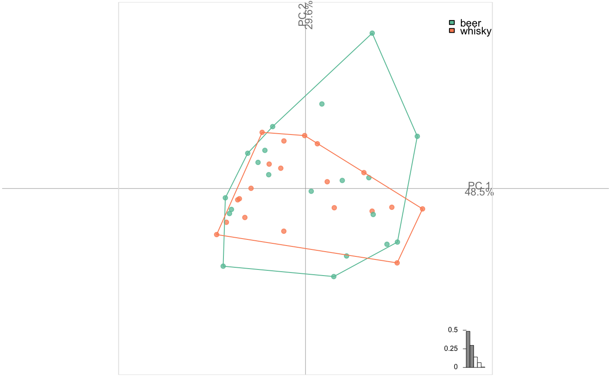

See examples for the full list.
coo_scalars(coo, rectilinearity = FALSE)
| coo | a |
|---|---|
| rectilinearity |
|
data_frame
coo_rectilinearity being not particularly optimized, it takes around 30 times more time to include it than to calculate all others and is thus not includedby default. by default.
Other coo_ descriptors:
coo_angle_edges(),
coo_angle_tangent(),
coo_area(),
coo_boundingbox(),
coo_chull(),
coo_circularity(),
coo_convexity(),
coo_eccentricity,
coo_elongation(),
coo_length(),
coo_lw(),
coo_rectangularity(),
coo_rectilinearity(),
coo_solidity(),
coo_tac(),
coo_width()
df <- bot %>% coo_scalars() # pass bot %>% coo_scalars(TRUE) if you want rectilinearity colnames(df) %>% cat(sep="\n") # all scalars used#> area #> calliper #> centsize #> circularity #> circularityharalick #> circularitynorm #> convexity #> eccentricityboundingbox #> eccentricityeigen #> elongation #> length #> perim #> rectangularity #> solidity #> width